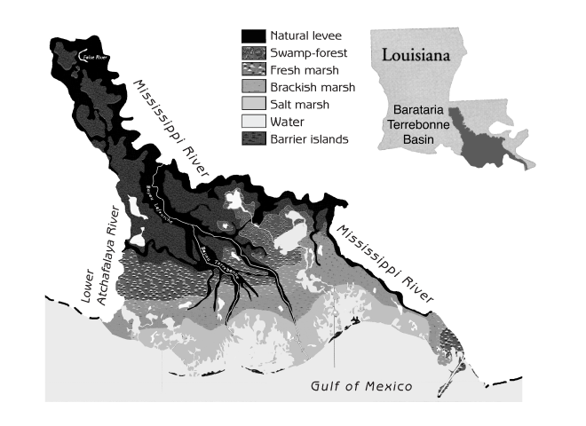
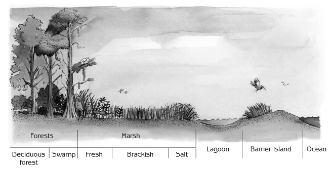
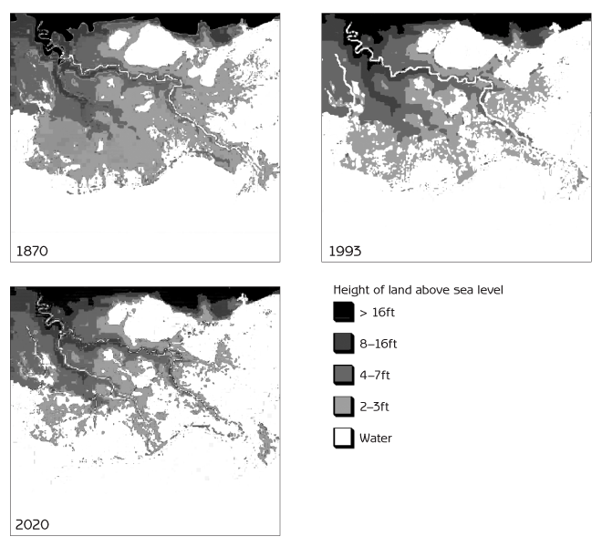

Human Ecology
Basic Concepts for Sustainable Development
Author: Gerald G. Marten
Publisher: Earthscan Publications
Publication Date: November 2001, 256 pp.
Paperback ISBN: 1853837148
Hardback SBN: 185383713X
Chapter 12: Examples of Ecologically Sustainable Development
- Dengue hemorrhagic fever, mosquitoes and copepods: an example of eco-technology for sustainable development
- The Barataria-Terrebonne National Estuary Program: an example of regional environmental management
- Things to think about
This chapter presents two case studies that illustrate many of the concepts in this book. The first is about eco-technology, and the second is about a regional environmental programme. I personally participated in both.
Today, so many contemporary trends seem to be away from ecologically sustainable development. How can we foster sustainable development in the face of these trends? These case studies start by showing how changes in the human social system changed human - ecosystem interaction in ways that in turn have changed the ecosystem with detrimental consequences for people. Each case study then demonstrates how people can translate ecological ideas into concrete actions to move human - ecosystem interaction in a healthier and more sustainable direction.
These examples show the rewards of paying attention to both ecological and social considerations in a balanced manner when dealing with environmental problems. Effective and enduring solutions to environmental problems cannot be expected when solutions focus only on political and economic considerations to the exclusion of ecological realities, or when they focus solely on ecological considerations to the exclusion of social realities. The case studies show how real people are responsible for innovative ideas and the entire process of transforming ideas to reality. Sustainable development is not something that others will do for us. It is something that together we must all do for ourselves.
Dengue Hemorrhagic Fever, Mosquitoes and Copepods: An Example of Eco-Technology For Sustainable Development
Dengue hemorrhagic fever is an ‘emergent’ disease known only since 1950. This case study shows how modernization can create new public health problems and how local community action with an ecological approach can contribute to sustainable solutions.
The disease and the mosquito
Dengue is a flavivirus related to yellow fever. It may have originated in non-human primates, which still provide a natural reservoir in Africa and Asia. Non-human primates do not show symptoms, but humans can become seriously ill. First-time dengue infections in children are usually mild and often unnoticed, but first-time infections in adults may be severe. Fatalities are rare, but high fever, chills, headache, vomiting, severe prostration, muscle and bone aches and severe weakness for more than a month after the fever subsides make dengue fever an illness that many adults remember as the worst sickness they ever experienced.
Dengue hemorrhagic fever is a life-threatening form of dengue. It is not caused by a separate viral strain; instead, it comes from the fact that the dengue virus has four distinct strains. Infection with one strain confers lifelong immunity to that strain but also creates antibodies that enhance infection with the other three strains. Dengue hemorrhagic fever typically occurs when infection with one strain is followed a year or more later by infection with another strain. About 3 per cent of second infections produce dengue hemorrhagic fever, and about 40 per cent of dengue hemorrhagic fever cases develop a shock syndrome that can be fatal. The most damaging symptom is fluid leakage from capillaries into tissues and body cavities, sometimes accompanied by severe gastrointestinal bleeding (hence the name hemorrhagic). There is no medicine to counter the virus, but the loss of fluids can be treated by getting water and electrolytes into the vascular system, administered orally in mild cases and intravenously in severe cases. Most dengue hemorrhagic fever victims are under 15 years old. If untreated, about 5 per cent of cases are fatal, but proper treatment can reduce fatalities to less than 1 per cent.
The mosquito Aedes aegypti is the principal vector of both dengue and yellow fever. Originally a tree-hole-breeding mosquito in Africa, it long ago acquired an urban life style by breeding in similar situations around human habitations. Aedes aegypti now breeds in man-made containers such as water storage tanks, wells, clogged rain gutters and discarded objects such as tyres, tin cans and jars that collect rainwater. The mosquito lays her eggs on the side of a container a few millimetres above the water level. The eggs can sit for months without hatching if they remain dry, but they hatch within minutes if covered with water. The fact that this normally happens only when more water is added to a container increases the probability that a container will have enough water for the larvae to complete their development before the container dries out.
While male mosquitoes feed only on plant juices, females suck blood from animals to get the nutrients they need to develop their eggs. When a female takes blood from a person infected with dengue, the virus multiplies in her body, and 7 to 15 days later (depending upon temperature) she has enough of the virus to infect people. Transmission of the virus is much higher in tropical climates, where rapid viral multiplication at higher temperatures makes it more likely for an infected mosquito to survive long enough to become infectious.
History of dengue
Starting in the 16th century with the expansion of European colonialism and trade, Aedes aegypti spread around the world by hitching rides in water storage containers on boats. Dengue and Aedes aegypti existed in Asia for centuries without serious consequences because the distribution of Aedes aegypti was limited by Aedes albopictus, an indigenous Asian mosquito that is physiologically capable of transmitting dengue but not associated with significant dengue transmission in practice. Asian towns and cities were well endowed with trees and shrubs, and Aedes albopictus competitively excluded Aedes aegypti wherever there was vegetation.
The situation in the Americas was quite different. Aedes aegypti thrived in cities and towns because no mosquito like Aedes albopictus restricted its distribution. We know Aedes aegypti was common in the Americas because of numerous yellow fever epidemics following the introduction of yellow fever from Africa by the slave trade in the 16th century. The historical record for dengue is not clear because its symptoms do not distinguish it from other diseases, but dengue was probably common throughout much of the Americas for centuries. Philadelphia had a dengue fever epidemic in 1780. Dengue fever was common in towns and cities on the Gulf and Atlantic coasts of the United States until the 1930s.
Dengue probably spread everywhere with Aedes aegypti, but it did not attract much attention, even where the infection rate was high, because most people were infected as children with mild symptoms. Devastating epidemics made yellow fever a very different matter. Aedes aegypti became an object of international attention when Walter Reed demonstrated in 1900 that this mosquito was responsible for yellow fever transmission. Campaigns were initiated in the Americas to get rid of Aedes aegypti by eliminating the places where it bred around people’s houses. During the 1930s the Rockefeller Foundation mobilized a virtual army of house-to-house government inspectors in Brazil to find and eliminate every place Aedes aegypti might breed. Inspectors had legal authority to enter premises, destroy containers, apply oil or paris green (an arsenic mosquito larvicide) and impose fines. It was possible to consolidate the eradication of Aedes aegypti neighbourhood by neighbourhood, without reinvasion, because adult Aedes aegypti usually travels less than 100 metres in a lifetime. The campaign was so effective that Aedes aegypti was eradicated from large areas of Brazil by the early 1940s.
Although there were outbreaks resembling dengue hemorrhagic fever in Queensland, Australia, in 1897 and in Greece in 1928, dengue hemorrhagic fever was not a recognized disease until 1956 because it was unusual to have more than one strain in the same region. Everything changed with World War II, when large numbers of people and the four dengue strains were moved around the Asian tropics. There were numerous dengue fever epidemics during the war as the virus was introduced to new areas where people lacked immunity. Cases with dengue fever symptoms appeared in Thailand in 1950. The first recognized dengue hemorrhagic fever epidemic was in the Philippines in 1956, followed by epidemics in Thailand and other parts of South-East Asia within a few years. Uncontrolled growth of developing world cities during the following decades greatly expanded Aedes aegypti’s breeding habitat. Urban landscapes provided a bounty of water storage tanks and discarded containers collecting rainwater in neighbourhoods lacking basic services such as piped water and trash collection. The decline of vegetation in urban landscapes allowed Aedes aegypti to expand through Asian cities without competition from mosquitoes such as Aedes albopictus.
The spread of dengue hemorrhagic fever was probably delayed by the appearance of DDT in 1943. DDT was like a miracle. It was harmless to vertebrates at concentrations used to kill insects, and it was effective for months after application. In 1955 the World Health Organization began a global campaign to spray every house in malarial areas with DDT. Malaria virtually disappeared from many areas by the mid 1960s, and at the same time Aedes aegypti disappeared from most of Latin America and some parts of Asia such as Taiwan.
Failure of the DDT strategy
The incredible success of DDT was short-lived because mosquitoes evolved resistance that spread quickly around the world. Developing world governments could not afford to continue intensive spraying, particularly when alternatives to DDT such as malathion cost more than ten times as much. Malaria started to return in force by the late 1960s, and by the mid 1970s Aedes aegypti returned to most areas from which it had previously been eradicated. Dengue did not return to the United States because window screening and air conditioning led to an indoor life style that reduced contact between people and mosquitoes. However, the four dengue strains and dengue hemorrhagic fever spread rapidly through tropical Asia, settling into a permanent pattern of recurring local dengue fever outbreaks as the four strains continued to circulate. Dengue hemorrhagic fever entered the Americas in 1981 with an epidemic in Cuba that hospitalized 116,000 people in three months. Dengue quickly spread through much of Latin America, sometimes punctuated by dengue fever epidemics of hundreds of thousands of people, but dengue hemorrhagic fever was generally sporadic because most areas had only one strain. Although dengue was common in many parts of sub-Saharan Africa, it was not a major health problem because Africans are generally resistant to severe dengue infection.
The social and political situation for dealing with Aedes aegypti had changed immensely since the campaigns against yellow fever earlier in the century. A few wealthier countries such as Taiwan continued to spray houses with newer insecticides, and a few countries such as Cuba and Singapore initiated comprehensive house inspections and fines to get rid of Aedes aegypti breeding around people’s homes. However, most countries lacked the political will and the financial and organizational resources to implement such programmes. Chemical larvicides that kill all the mosquito larvae, and later a microbial larvicide (Bacillus thuringiensis), were available to treat water storage containers. However, people were reluctant to put pesticides in their water. Even if people are willing, larvicides must be applied on a weekly basis to be effective. The cost of purchasing larvicides and managing large-scale use proved beyond the capacity of every government that tried to implement it. Some governments tried to organize voluntary community participation to eliminate Aedes aegypti breeding habitats - advising housewives, for example, to clean their water storage containers weekly to interrupt development of the larvae - but without much success.
There is no vaccine or medicine for dengue; the only way to prevent the disease is to get rid of the mosquitoes. Today the main action against the mosquitoes is by individual families who purchase insecticide spray cans and mosquito coils to keep mosquitoes from bothering them at night. The effect on Aedes aegypti is limited, because this mosquito bites during the day and spends most of its time resting in places such as clothes closets beyond the reach of casual spraying. Vaccine development has been underway for years; but progress has been slow, and a vaccine could be risky because it might enhance susceptibility to dengue hemorrhagic fever, as happens after natural dengue infections. It is now typical in most places for governments to do little about Aedes aegypti until there is a dengue epidemic or dengue hemorrhagic fever appears. Then trucks drive up and down streets spraying malathion, with little impact in many instances because the epidemic is already well underway and female Aedes aegypti are inside houses where not much insecticide can reach them. Even if spraying manages to reduce the mosquito population, it must be repeated frequently to sustain the impact. Aedes aegypti can rebound to large numbers within a few days.
There has been no noticeable decrease in dengue fever or dengue hemorrhagic fever cases during the past 20 years. Worldwide, about 50 to 100 million people are infected with dengue each year. There are several million severe dengue fever cases and about 500,000 dengue hemorrhagic fever cases annually. Fatalities have remained high in some countries, but other countries have reduced fatalities dramatically by providing extensive medical treatment. Several hundred thousand people are hospitalized with dengue hemorrhagic fever in Vietnam and Thailand every year, but the fatality rate is less than 0.3 per cent. Nonetheless, the economic costs are high. Patients require one to three weeks of hospitalization, and parents lose work time while caring for sick children in hospitals. Global warming could eventually extend the geographic range of dengue as higher temperatures, and consequently shorter viral incubation times in mosquitoes, stimulate transmission.
Copepods enter the scene
Although biological control with predators of Aedes aegypti larvae offers the possibility of functioning without the frequently repeated applications necessary for pesticides, it did not receive serious consideration when the DDT strategy collapsed. Fish were widely used against malarial mosquito larvae prior to the DDT era, but the use of fish for Aedes aegypti control was limited because fish were expensive and did not survive for long in most containers. Besides, many people did not want fish in their water storage containers, particularly if they used the water for drinking. Many aquatic animals such as planaria, dragonfly nymphs and aquatic bugs were known to prey on mosquito larvae, but none had ever proved effective enough or practical enough to go into operational use. Mosquito-control professionals and public health officials, who relied heavily on chemical pesticides throughout their careers, considered biological control a pipe dream. Opportunities for profit were too remote to stimulate research and development by the private sector.
This was the situation about 20 years ago, when scientists in Tahiti, Colombia and Hawaii independently discovered that virtually no Aedes larvae survived in water-filled containers if the copepod Mesocyclops aspericornis was present. Copepods are tiny crustaceans that are ecologically very different from other aquatic invertebrates that prey on mosquito larvae. If mosquito larvae are numerous, the copepods eat only a small part of each larva, giving each copepod the capacity to kill 30 to 40 larvae per day, far more than they actually eat. Even more important is their large numbers. Copepods eat small animals up to twice their own size, but they also eat phytoplankton, protozoa and rotifers - a diet that provides enough food to make copepods the most abundant predator in most freshwater habitats. The total capacity of a copepod population to kill mosquito larvae is enormous. Most species of copepods are too small (0.3 - 1.2 millimetres in body length) to prey on even the smallest mosquito larvae, but Mesocyclops aspericornis and other large species of copepods (1.2 millimetres or more in body length) attack and consume newly hatched mosquito larvae without hesitation. About 10 per cent of areas with water where mosquitoes might breed have natural populations of Mesocyclops or other large copepods, which drastically reduce the survival of mosquito larvae.
![Figure 12.1 - Mesocyclops (actual length approximately 1.5 millimetres) Note: Copepods do not have eyes; the eyespot in the middle of the forehead detects light but does not form an image. Copepods move by means of rapid oarlike movements of their large antennules (the long structures extending to each side of the body from the front). The antennules contain mechanical sensory organs that detect vibrations in the water so that copepods know when small animals such as mosquito larvae are close enough to be captured as food. Female copepods carry egg sacs on both sides of their body for about three days until young copepods emerge from the eggs.](images/12-01-english.gif)
The same thing that happens in nature can be achieved by introducing appropriate copepod species to sites that do not already have them. This principle applies not only to containers where Aedes aegypti is breeding but also to aquatic habitats where Anopheles malarial mosquitoes breed. Malarial mosquito larvae are generally scarce in habitats that contain natural populations of large Mesocyclops species; Anopheles larvae disappeared when Mesocyclops were introduced to rice fields and small marsh areas in Louisiana. Unfortunately, the potential of Mesocyclops for malaria control has not been developed further because malaria control agencies have abandoned their efforts to control mosquitoes. Contemporary malaria control is based almost entirely on anti-malarial drugs, whose long-term effectiveness is doubtful due to drug resistance already widespread among malarial parasites.
The development of copepods for dengue control has been much more successful because copepods are effective and easy to use in the simple container habitats where Aedes aegypti breeds. It is unusual for copepods to get into man-made containers on their own; but they thrive in many kinds of containers when introduced, and they do so independently of the supply of mosquito larvae. Copepod populations range from hundreds in a rainwater-filled tyre to thousands in a water storage tank. The largest species usually kill more than 99 per cent of the Aedes aegypti larvae, and they usually stay in a container for as long as there is water. Even without water, they can survive as long as there is moisture.
The simple life cycle of copepods and their ability to thrive on a diet of protozoa make mass production easy and inexpensive. The production system uses bacteria on decomposing wheat seed as food for a small protozoan (Chilomonas) that provides food for young copepods and a larger protozoan (Paramecium caudatum) that provides food for the larger stages. The system is simple, inexpensive and highly resilient, functioning in open containers of any size or shape. One hundred adult female Mesocyclops produce about 25,000 new adult females within a month. Females are inseminated during adolescence and require no further contact with males to produce 50 to 100 eggs weekly during their several-month life span.
Once it was realized how effective copepods are, research was initiated in Australia, South-East Asia and the Americas to identify the best copepod species for mosquito control and how to utilize them. Suitable species were always available locally because copepods large enough to kill mosquito larvae occur naturally virtually everywhere that Aedes aegypti is a problem. Mesocyclops aspericornis is the most effective species in Polynesia, Australia and parts of Asia. Mesocyclops longisetus, the world’s largest species of Mesocyclops, proved most effective in the Americas.
In order for a copepod to be effective at controlling Aedes aegypti, it must do more than kill mosquito larvae. It must also be good at surviving in containers. Mesocyclops aspericornis and Mesocyclops longisetus are good at surviving in sun-exposed containers in the tropics because they tolerate water temperatures up to 43º Celsius. Moreover, because they cling to the bottom and sides of a container, they survive in water storage containers from which people frequently scoop water. Copepods that swim in the water column quickly disappear from a water storage container. Mesocyclops aspericornis and Mesocyclops longisetus are effective in wells, cisterns, cement tanks, 200-litre drums, clay jars, flower vases and even bromeliads if they have water on a continuous basis. People do not object to copepods in their water storage containers because these tiny animals are barely noticeable. Besides, it is not unusual for other small aquatic animals to live in the water.
Copepods do not survive in small rainwater-filled containers or discarded tyres that dry out frequently, though they do well in tyres that are continuously filled with water during the rainy season. They do not survive in small cement tanks with rapid water turnover, particularly if the water is frequently run down the drain, and they are killed when bleach is left in a tank after cleaning or slopped into a tank while washing clothes next to the tank. A significant difficulty is the loss of copepods from water storage containers when they are cleaned. This is easily overcome by saving a small quantity of water from the container to restock it with copepods after cleaning. In small-scale pilot projects in Honduras and Brazil, housewives quickly learned to monitor their containers, maintaining Mesocyclops at their homes with pride. The key to success was personal attention from community organizers. Unfortunately, Latin American public health bureaucracies seem to lack the capacity for neighbourhood organization to expand the use of Mesocyclops on a larger scale.
Success in Vietnam
Dengue hemorrhagic fever is a serious concern in Vietnam because it has hospitalized nearly two million Vietnamese and killed more than 13,000 children since appearing there 40 years ago. The first demonstration of how effective Mesocyclops can be on a community scale began in 1993, when scientists at Vietnam’s National Institute of Hygiene and Epidemiology introduced local species of Mesocyclops into all of the water storage containers in Phanboi, a village of 400 houses in northern Vietnam. Like most of rural Vietnam, the two main sources of Aedes aegypti in Phanboi were large cement tanks (several-thousand litre capacity), which nearly every house uses for long-term storage of rainwater from the roof, and clay jars (20- to 200-litre capacity) used to store water for immediate use. Mesocyclops thrived in the large cement tanks, which are seldom drained or cleaned. They did nearly as well in large clay jars but could not survive for long in small clay jars because the water was frequently poured out. Introduction of Mesocyclops to wells provided a reservoir that continually restocked clay jars used to store well water.
The Aedes aegypti population in Phanboi declined by about 95 per cent during the year after Mesocyclops introduction. However, Aedes aegypti was still breeding in small discarded containers such as jars, bottles and cans that collected rainwater but could not be treated with Mesocyclops. Villagers were encouraged to participate more actively, and motivation was high due to a prior history of dengue hemorrhagic fever outbreaks in the village. The socialist political system provided a basis for rapid, comprehensive and continuous community mobilization. The village women’s union educated villagers about the use of Mesocyclops and organized villagers to stock any containers without Mesocyclops by pouring in a small quantity of water from containers that already had them. An existing recycling programme for discarded containers was reorganized to ensure they did not collect rainwater while waiting for pickup. Aedes aegypti disappeared within a few months, and no Aedes aegypti mosquitoes or their larvae have been sighted in the village during the subsequent seven years. The disappearance of Aedes aegypti was significant because it was the first time in more than 20 years that even a local eradication of any kind of mosquito had been documented anywhere in the world, and it was accomplished without pesticides.
Mesocyclops was then introduced to other villages in northern Vietnam, and Aedes aegypti disappeared from them as well. It is noteworthy that Aedes aegypti disappeared without having Mesocyclops in every container. Success was probably due to the ‘egg-trap effect’. Egg-laying mosquitoes do not discriminate against containers with Mesocyclops, so they waste their eggs on containers with Mesocyclops instead of putting them in containers with better prospects for larval survival. Computer simulation studies indicate that a mosquito population will collapse if Mesocyclops is in more than 90 per cent of the containers. In contrast, getting rid of 90 per cent of the containers only reduces mosquito populations in the model by 90 per cent.
The successful demonstration at Phanboi was essential for mobilizing official government support and foreign financial assistance to distribute Mesocyclops to more communities in Vietnam. Television publicity and school education programmes are making Mesocyclops a household word. A government inquiry telephone line refers interested communities to health workers who can provide Mesocyclops and explain their use. A simple mass-production system at Vietnam’s National Institute of Hygiene and Epidemiology uses 150-litre plastic waste pails to produce several hundred thousand Mesocyclops per month at very low cost.
The programme follows the Phanboi model. Central staff members train local health workers, who in turn use videotape documentaries to introduce Mesocyclops to the community. The health workers train local teachers to organize students for regular collection of discarded containers. From the village women’s union, health workers recruit volunteer ‘collaborators’ with demonstrated reliability in ongoing house-to-house family planning and immunization programmes. Each collaborator is responsible for 50 to 100 houses and starts by introducing about 50 Mesocyclops into a tank at one of the houses. As soon as the copepods multiply to large numbers, the collaborator carries a bucket of tank water containing Mesocyclops around to all the other houses, pouring a glass of the water into every container. Collaborators explain the use of Mesocyclops to every family and return at least once a month to inspect the containers. The programme has trained about 900 health workers and collaborators, and Mesocyclops has been distributed to more than 30,000 households in northern and central Vietnam.
Most communities in the programme have repeated the scenario at Phanboi. Aedes aegypti disappears about a year after Mesocyclops introduction. The few exceptions have been urban communities, where Aedes aegypti has declined but not disappeared; the reason is incomplete coverage of the houses by local collaborators. It is sometimes necessary to recruit collaborators of unknown reliability in urban areas that lack ongoing house-to-house health programmes. While most new collaborators do a good job, some do not, and their task can be complicated by lower social cohesion in cities. With 12 million Vietnamese households in dengue areas, the potential number to be served is enormous. The bottleneck for national distribution of Mesocyclops is training health workers and local collaborators. Some provinces are setting up their own Mesocyclops production and training centres. The programme will face its greatest challenge as it extends to southern Vietnam, whose tropical climate is ideal for Aedes aegypti and dengue transmission throughout the year.
Transporting large numbers of Mesocyclops from production facilities to villages can be a problem because copepods quickly exhaust their food supply when crowded in a small quantity of water. Then they eat each other. An easy solution comes from the fact that Mesocyclops can survive for months suspended on damp foam rubber, where they cannot move to eat each other. Foam rubber cubes are stacked in small plastic containers for mailing to public health offices throughout Vietnam. The copepods are introduced to a water storage container by dropping a foam rubber cube with 50 copepods into the container.
Vietnam reported 234,000 dengue hemorrhagic fever cases in 1998, responsible for more deaths than any other infectious disease. In 1999 the government initiated a high-priority national dengue programme with Mesocyclops in a leading role, not only for dengue prevention but also for dealing with dengue outbreaks in areas where Mesocyclops is not yet in use. The government provides kits to local health workers for rapid blood analysis of suspected dengue cases so that an immediate emergency response can go into action wherever dengue is confirmed. As the supply increases, Mesocyclops will be routinely distributed to houses in outbreak areas.
Prospects for Mesocyclops in other countries
Can other countries use Mesocyclops as successfully as Vietnam? The prospects are particularly promising in South-East Asia, where dengue hemorrhagic fever is a major health problem, public concern is high and most Aedes aegypti breeding habitats are similar to the water storage containers that have proved ideal for Mesocyclops in Vietnam. Public motivation is not as strong outside of South-East Asia, and some of the breeding habitats are not as ideal for Mesocyclops. While dengue control in other areas will often require substantially more than Mesocyclops and container recycling, Mesocyclops can eliminate Aedes aegypti production from at least some kinds of containers almost everywhere that dengue is a problem.
The mechanics of production and distribution are not an obstacle to extending Mesocyclops to other countries. Production is inexpensive, and shipment to local distributors is easy. While production and distribution in Vietnam is by national, provincial and local government, distribution in other countries could use any combination of governmental department, non-governmental organization and the private sector that works under local conditions. The key to success is community organization. It is straightforward enough to put copepods in containers and restock the containers whenever copepods are lost, but it is essential to make sure that everyone does it. Success can proceed neighbourhood by neighbourhood. 100 houses that work together can free themselves of Aedes aegypti even if houses in the surrounding area do nothing.
The most promising strategy is to distribute Mesocyclops where local networks provide the greatest prospects for success. Vietnam has the advantage that most of its dengue is in rural areas where community organization is strongest and house-to-house health programmes are already functioning well. Fortunately, thousands of communities in other countries also have house-to-house networks of one sort or another for primary health care, family planning, paramedical malaria treatment, agricultural extension, religious charity and small business support. These same networks could serve as vehicles for distributing Mesocyclops and ensuring their proper use on a community scale. Even private marketing networks, which so effectively distribute insecticide spray cans and mosquito coils, could play a role if rewards based on community use are built into the incentive system. With each success, the demonstration effect should stimulate more communities to organize so that they can use Mesocyclops successfully.
Conclusions
What does the dengue hemorrhagic fever case study tell us? Firstly, it shows how human activities create environmental conditions that determine whether a disease will flourish or disappear. International transportation created dengue hemorrhagic fever by moving the four dengue strains around the world. Dengue disappears when people eliminate the opportunities for Aedes aegypti to breed in water-filled containers around their homes.
Secondly, it demonstrates how local mosquito eradication is possible with ecological management. An ecological disease-control strategy that integrates a variety of control methods is more effective than a strategy based exclusively on pesticides. We can expect ecological methods to be sustainable. It is unlikely that mosquito larvae will evolve resistance to Mesocyclops.
Thirdly, it demonstrates the level of effort necessary for success. The effort that prevails nearly everywhere in the world today does not meet that standard. Nor does it meet the standard of the yellow fever campaign that eradicated Aedes aegypti from much of Brazil 60 years ago, a campaign that owed its success to its intensity and its meticulous organization and management.
Finally, and most importantly, it highlights the central role of local community. Dengue hemorrhagic fever will be eliminated only through an intense and well-organized effort at the local level. The general lack of progress with dengue during the past 30 years is not unique. Social support systems in local communities have declined throughout the world as personal and public priorities have shifted in other directions. Numerous dimensions of human welfare that depend upon strong local communities have declined correspondingly. While responsibility for a strong and effective local community must reside primarily with local citizens, encouragement and assistance from national governments can be decisive. Ecologically sustainable development, including sustainable control of mosquito-transmitted diseases, will become a reality only when and where local communities are truly functional.
Further reading
- Brown, M, Kay, B and Hendrix, J (1991) ‘Evaluation of Australian Mesocyclops (Copepoda: Cyclopoida) for mosquito control’, Journal of Medical Entomology, vol 28, pp618 - 623
- Christophers, S (1960) Aedes Aegypti (L.). The Yellow Fever Mosquito: Its Life History, Bionomics and Structure, Cambridge University Press, Cambridge
- Focks, D, Haile, D, Daniels, E and Mount, G (1993) ‘Dynamic life table model for Aedes aegypti (Diptera: Culicideae): analysis of the literature and model development’, Journal of Medical Entomology, vol 30, pp1003 - 1017
- Halstead, S (1997) ‘Epidemiology of dengue and dengue hemorrhagic fever’ in Gubler, D and Kuno, G (eds) Dengue and Dengue Hemorrhagic Fever, CAB International, New York
- Halstead, S (1998) ‘Dengue and dengue hemorrhagic fever’ in Feigin, R and Cherry, J (eds) Textbook of Pediatric Infectious Diseases, W B Sanders, Philadelphia
- Halstead, S and Gomez-Dantes, H (eds) (1992) Dengue - a worldwide problem, a common strategy, Proceedings of an International Conference on Dengue and Aedes aegypti Community-based Control, Mexican Ministry of Health and Rockefeller Foundation, Mexico
- Marten, G (1984) ‘Impact of the copepod Mesocyclops leuckarti pilosa and the green alga Kirchneriella irregularis upon larval Aedes albopictus (Diptera: Culicidae)’, Bulletin of the Society for Vector Ecology, vol 9, pp1 - 5
- Marten, G, Astaeza, R, Suárez, M, Monje, C and Reid, J (1989) ‘Natural control of larval Anopheles albimanus (Diptera: Culicidae) by the predator Mesocyclops (Copepoda: Cyclopoida)’, Journal of Medical Entomology, vol 26, pp624 - 627
- Marten, G (1990) ‘Evaluation of cyclopoid copepods for Aedes albopictus control in tires’, Journal of American Mosquito Control Association, vol 6, pp681 - 688
- Marten, G (1990) ‘Elimination of Aedes albopictus from tire piles by introducing Macrocyclops albidus (Copepoda, Cyclopoida)’, Journal of American Mosquito Control Association, vol 6, pp689 - 693
- Marten, G, Bordes, E and Nguyen, M (1994) ‘Use of cyclopoid copepods for mosquito control’, Hydrobiologia, vol 292/293, pp491 - 496
- Marten, G, Borjas, G, Cush, M, Fernández, E, and Reid, J (1994) ‘Control of larval Ae. aegypti (Diptera: Culicidae) by cyclopoid copepods in peridomestic breeding containers’, Journal of Medical Entomology, vol 31, pp36 - 44
- Marten, G, Thompson, G, Nguyen, M and Bordes, E (1997) Copepod Production and Application for Mosquito Control, New Orleans Mosquito Control Board, New Orleans, Louisiana
- Riviere, F and Thirel, R (1981) ‘La predation du copepods Mesocyclops leuckarti pilosa sur les larves de Aedes (Stegomyia) aegypti et Ae. (St.) polynesiensis essais preliminaires d’utilization comme de lutte biologique’, Entomophaga, vol 26, pp427 - 439
- Nam, V, Yen, N, Kay, B, Marten, G and Reid, J (1998) ‘Eradication of Aedes aegypti from a village in Vietnam, using copepods and community participation’, American Journal of Tropical Medicine and Hygiene, vol 59, pp657 - 660
- Soper, F, Wilson, D, Lima, S and Antunes W (1943) The Organization of Permanent Nation-wide anti-Aedes aegypti Measures in Brazil, The Rockefeller Foundation, New York
- Suarez, M, Ayala, D, Nelson, M and Reid, J (1984) ‘Hallazgo de Mesocyclops aspericornis (Daday) (Copepoda: Cyclopoida) depredador de larvas de Aedes aegypti en Anapoima-Colombia’, Biomedica, vol 4, pp74 - 76
Another publication with this story.
The Barataria-Terrebonne National Estuary Program: An Example of Regional Environmental Management
Estuaries are ecosystems where rivers spread out over a large area as they run into the sea. Much of the water in estuaries is a combination of fresh and salt water mixed by the ocean tides. Estuaries are exceptional in their biological diversity, their biological productivity and the economic value of their biological resources. Estuaries are also among the world’s most endangered ecosystems. Their wealth of natural resources encourages intensive use and overexploitation as well as conversion of the natural ecosystems to agricultural ecosystems. Many coastal mangrove ecosystems in South-East Asia have been converted to aquaculture ponds to satisfy the global market for shrimp, prawns and fish. Many of the world’s largest cities are located in coastal areas, where fertile floodplain soils of nearby estuaries are used to produce food for the city. It is not unusual for growing coastal cities to expand over nearby estuaries.
The Barataria-Terrebonne estuary is the largest estuary in the United States. The entire estuary system covers an area of 16,835 square kilometres where the Mississippi River flows into the Gulf of Mexico (Figure 12.2). It is home to approximately 735 species of shellfish, fish, amphibians, reptiles, birds and mammals. Approximately 630,000 people live in the area, and its rich natural resources provide a livelihood to many additional people living outside the area. The Barataria-Terrebonne estuary provides an example of ecological problems that can arise when natural resources are exploited intensively and when natural ecosystems are deliberately modified or transformed to other kinds of ecosystems for human purposes. The Barataria-Terrebonne estuary case study is particularly instructive because the local people have developed a carefully designed programme of action to mobilize their community for dealing with the problems. It is a success story that illustrates adaptive development as described in Chapter 11, showing what it takes to make adaptive development a reality and what adaptive development can accomplish.

Description and history of the estuary
Like other estuaries, the Barataria-Terrebonne estuary is a landscape mosaic that developed in response to moisture, salinity and other physical gradients extending from dry land through wetlands to open water, and from pure river water through brackish water to sea water. The estuary has three major types of natural ecosystems which occur along a gradient from higher to lower ground: swamp; marsh; and open water (Figure 12.3). The highest ground is dry enough for houses and farms and mixed deciduous forests characteristic of the region. Much of the higher ground is periodically flooded so that for most of the year the soil is wet or even under several centimetres of water. The natural ecosystem in this situation is swamp, a wetland forest dominated by cypress trees that can grow to a vast size during a lifetime of a thousand years. Swamp and deciduous forest ecosystems occupy 19 per cent of the estuary system. At slightly lower ground with more water, marsh ecosystems prevail, making up 22 per cent of the estuary system. Where the water is brackish or saline, marshes are typically characterized by a dense cover of coarse grasses 0.5 - 1 metre in height. Large animals in the swamps and marshes include bears, deer and alligators (which can grow to more than 4 metres in length). The open water covering the lowest ground is too deep for trees or marsh grasses to grow. Open water occupies 37 per cent of the estuary system and contains aquatic ecosystems.

The estuary contains an impressive array of natural resources including timber, wildlife and seafood. It is also the nursery for numerous species of commercially important fish in the Gulf of Mexico. The integrity of natural ecosystems in the estuary is maintained by a dynamic equilibrium between sedimentation and sinking of the land. It is natural for wetland soils to sink a few centimetres each year. Because the soil has such a high organic matter content, some of the organic matter is decomposed and some is compressed by the weight of the soil above it. Sediment deposited during flooding compensates for the sinking by adding soil to the top. If there is enough sediment in the floodwater to entirely compensate for the sinking, the landscape topography and the resulting water regime of the estuary remain more or less the same from year to year.
As in the rest of North America, Native Americans inhabited the Barataria-Terrebonne estuary for thousands of years. Their population was small and their demands on the estuary’s natural resources were modest. More intensive use began around 200 years ago with the arrival of European settlers who logged the cypress forests and cleared the higher (and drier) land for farming and construction of their homes. Since then, the different natural resources have been subject to intensive use at different times, as changing markets and the boom and bust of resource overexploitation and depletion have led the people in the area to switch their attention from one resource to another. Spanish moss, which hung from cypress trees in abundance, was harvested to provide stuffing for mattresses during the early years. Land was drained for commercial crops such as cotton. A prodigious supply of fish, shrimp, oysters and crawfish provided jobs for immigrant fishermen from numerous countries. Alligators were killed in large numbers for their valuable hides, and fur-bearing animals such as muskrats, mink and otter were trapped for their pelts. Nutria (coypu) were introduced from South America at the beginning of the 20th century to add a resource for the fur trade. The market for nutria pelts has declined with the anti-fur movement in recent years and, despite predation by alligators, nutria populations have exploded and seriously overgrazed marsh vegetation.
Exploitation of the estuary’s natural resources changed the face of the landscape, but even greater changes resulted from developments that gained momentum during the 20th century. Most conspicuous was the network of canals constructed for navigational purposes. Intensive petroleum exploration and exploitation dating from the 1930s increased the number of canals, polluting and damaging natural ecosystems. Construction of levees and other public works for flood control completely altered the pattern of water circulation, flooding and sediment deposition that maintained natural ecosystems throughout the estuary. These changes set in motion numerous chains of effects reverberating through the estuary ecosystem. Natural ecosystems were deteriorating at an alarming rate by the 1980s. The biological resources on which so many of the estuary’s inhabitants depended for a living were seriously threatened. Some families were losing the land on which they built their homes.
Ecological problems
Change in water flow. Canals for navigation, as well as oil and gas exploration and extraction, create open channels for tidal movement of salt water further into the estuary. This salt-water intrusion increases the salinity in some parts of the estuary, changing the biological community to salt-tolerant plants and animals that previously lived only in saline areas closer to the ocean. Salinity can kill large numbers of cypress trees, particularly when salt water is carried into the estuary by powerful storm surges associated with hurricanes. Canals also increase soil loss from the estuary, as the erosion of canal banks by waves from passing boats expands the areas of open water. Material dredged to make canals is piled at the sides, obstructing water movement and causing accumulations of water in some places while preventing water and sediment from reaching other places. Flood control levees prevent river water and sediment from dispersing over the surrounding wetlands. Most of the sediment in the Mississippi River (200 million metric tons per year) is channelled through the estuary into the Gulf of Mexico.
Reduction in sedimentation. The Mississippi River carries 80 per cent less sediment today than it did a century ago. Soil conservation measures throughout the Mississippi River watershed have reduced the quantity of sediment flowing into the river, and numerous water control structures along the course of the river (eg, locks and dams) reduce water flow so that most sediment settles out of the river water before it reaches the estuary. Nonetheless, the Mississippi River contains enough sediment to build land that is not isolated from the river by levees. While floodwaters deposited sediment throughout the estuary in the past, many parts of the estuary now receive no sediment input from the Mississippi River because levees prevent floodwaters from reaching reach them.
Land loss and habitat changes. When natural sinking of the wetlands is not compensated by sediment deposition, the result is land subsidence. Water levels increase because lower land is covered with deeper water, and changes in water level change the entire biological community. Swamps change to marshes and marshes change to open water (see Figures 12.4 and 12.5). This land loss has been exacerbated by erosion due to wave action, human activities such as dredging and canal construction, and the global rise in sea level attributed to global warming. Most of the land loss has been from salt marsh areas (Figure 12.2), which is the wetland closest to the ocean. Land loss is particularly severe where nutria eat up all the marsh grasses, leaving almost no vegetation to hold the soil. During the 1980s, 54 square kilometres of wetland (0.8 per cent of the total wetland area in the estuary) were lost each year. The rate of land loss declined during the 1990s, in part because much of the more easily eroded land was already gone.


Eutrophication. Sewage and agricultural runoff contain plant nutrients such as nitrogen, phosphorous and silicates that stimulate blooms of algae and other plants which consume large quantities of oxygen at night and eventually remove even larger quantities of oxygen from the water when they die and decompose. The effects of low oxygen concentrations in the water are particularly conspicuous when low oxygen causes a massive fish kill.
Pathogen contamination. Sewage pollution contaminates the estuary with bacteria and viruses that concentrate in shellfish and other seafood, creating a health hazard for people and reducing income from these resources.
Toxic substances. Although the Mississippi River arrives at the estuary after industrial and household wastes have been dumped into it along its course of more than a thousand miles, the quantity of pollution has been reduced substantially during recent decades. While the river water contains higher than acceptable levels of nitrogen and atrazine (a herbicide used in cornfields upriver), the Mississippi River is not a significant source of pollution for the estuary. Virtually all of the pollution in the estuary comes from substances spilled into the estuary itself. These include: herbicides for controlling water hyacinth and other aquatic weeds that obstruct navigation in canals; emissions from petrochemical and chemical industries along nearby portions of the Mississippi River; pollution from boats, oil spills and other pollution associated with oil and gas production; agricultural and urban runoff including agricultural pesticides, chemicals for lawns and gardens and old automobile engine oil dumped on the ground; and seepage from disposal of hazardous wastes, including heavy metals and a variety of carcinogenic organic substances. Many of these substances accumulate in the food chain, where they can present hazards to human health.
Change in living resources. As the area of wetland declines, the number of plant and animal species associated with those wetland ecosystems declines correspondingly. Overexploitation and pollution can also have adverse impacts on the plants and animals. Bald eagles and brown pelicans nearly disappeared from the estuary during the 1960s because of DDT pollution from agricultural use. Populations of these two birds have recovered in recent years because DDT use stopped in the early 1970s. Introduced species of plants and animals compete with native species. Nutria consume nearly all the vegetation on about 4 square kilometres of marshland each year. In 2000, a Spartina grass die-back of unknown cause (called ‘brown marsh’) transformed about 80 square kilometres of salt marsh to mud flats and affected another 900 square kilometres of salt marsh to a lesser extent. The effects of ecological changes in the estuary on fisheries are not well understood, but some scientists think that further deterioration of the estuary could lead to a serious decline in fisheries. Despite these problems, no species of plant or animal appears to be in imminent danger of disappearing from the estuary.
The solution: a regional environmental programme
In 1990, the United States government Environmental Protection Agency decided to develop environmental management plans for all major estuaries in the United States. A core team of seven full-time staff, assisted by numerous part-time volunteers, were responsible for the development of a management plan for the Barataria-Terrebonne estuary. The following mission statement provided terms of reference:
The Barataria-Terrebonne National Estuary Program (BTNEP) will work to develop a coalition of government, private, and commercial interests to identify problems, assess trends, design pollution control and resource management strategies, recommend corrective actions, and seek commitments for implementation. This coalition will provide the necessary leadership, will facilitate effective input from affected parties, and will guide the development of coordinated management procedures. The BTNEP will provide a forum for open discussion and cooperation by all parties that includes compromise in the best interest of natural resource protection.
The management plan was developed through a series of strategic planning workshops that utilized a ‘technology of participation’ developed by the Institute for Cultural Affairs. The planning process was designed around the following sequence of workshops over a period of nearly two years:
- Vision for the future.
- Obstacles to realizing the vision.
- Actions to realize the vision.
- Coalitions to implement the actions.
The following description of what happened during each of these stages demonstrates how the design of a regional environment programme can evolve from broad goals, as in the mission statement above, to a specific set of actions to realize the goals.
The planning process was open to anyone who wanted to participate, such as representatives from national, state and local governments, corporations and commercial organizations and interested citizens. A group of about 250 participants was continuously involved during the three years it took to formulate and refine the plan.
The planning process started with a workshop to identify a vision for the future of the estuary. The key question for the workshop was ‘What do we want the Barataria-Terrebonne estuary to be like in 25 years?’ The brainstorming procedure was designed to include the diverse and often conflicting opinions of all participants while identifying broad themes on which everyone could agree. Participants put forward their ideas by writing each idea with a few key words on a piece of paper which was then stuck on a wall for everyone to see. Participants were allowed to request clarification of the meaning of a particular idea but there was no discussion of the merits of an idea. Every idea on the wall went into the final record of the workshop.
Several hundred ideas were submitted. After putting all of them on the wall and making sure that everyone understood them, the workshop participants worked together to sort the ideas into groups that had something in common. All the participants then decided together on theme titles for each group of ideas. The theme titles, as well as every idea associated with each theme, were put into a word processor and printed out as a record of the workshop. The results from the workshop were summarized as a vision statement (see Box 12.1) which listed the themes identified by the workshop.
We the people of Louisiana and the Barataria-Terrebonne estuarine basins believe that the Barataria-Terrebonne ecosystem is a national treasure which represents a unique multi-cultural heritage. Furthermore, we recognize that our ongoing stewardship is critical to its preservation, restoration, and enhancement. This stewardship can only be maintained by active support of those who live in the basin, and those who use its abundant resources locally, statewide, and throughout the nation. Acknowledging the importance of this estuary to our environmental, cultural and economic well-being, the people living and working in these two basins believe that we should have a balanced ecosystem that includes:
- Public education and informed citizen participation.
- Local, state and national recognition and support.
- Maintained multi-cultural heritage.
- Sustained and restored wetlands that support viable fish and wildlife resources.
- Pollution abatement to protect the health of plants, animals and people.
- Environmentally responsible economic activity.
- Environmentally compatible infrastructure (roads, bridges, levees, railways, etc).
- Comprehensive, integrated watershed planning among all users.
- Harmonious use of the resources by many interests and resolution of user conflicts.
We pledge to work together to develop a plan to re-establish a chemical, physical and biological balance in the Barataria-Terrebonne estuary so that diverse plant and animal communities and human health and welfare can be improved and sustained for present and future generations.
Box 12.1 - First Barataria-Terrebonne estuary planning workshop: vision statement
The second workshop addressed obstacles and the challenges to overcome the obstacles. It followed the same procedure as the first workshop. Participants individually listed their ideas on cards that were placed on the wall. All participants then worked together to group the ideas and give theme names to the groups. The following obstacle themes and corresponding challenges are set out in Box 12.2.
Obstacle theme |
Challenge |
Conflicting agendas |
Discover common ground within the management and user groups |
Parochial attitudes |
Create a pathway toward regional pride and long-term stewardship of the estuary |
Distorted image |
Assemble a promotion package which emphasizes unique elements of the estuary and provides in-depth factual background |
Inadequately informed public |
Develop and implement a comprehensive programme to involve and inform all users |
Natural resource limits |
Identify the limits of our resources and seek balanced use |
Adjustment to natural processes |
Understand how to be compatible with natural change and use existing infrastructures to enhance the ecosystem and minimize impact of natural disasters |
Ineffective government |
Involve all levels and political jurisdictions in long-range planning and implementation |
Mistrust and resistance to environmental regulations |
Develop clear, fair, practical and enforceable with strict penalties regulations |
Data gaps and interpretations |
Organize and interpret data into information readily accessible to decision-makers and public |
Box 12.2 - Second Barataria-Terrebonne estuary planning workshop: obstacles and challenges
The challenges identified by the second workshop served as points of reference for the next workshop, which brainstormed actions to deal with the challenges. More than 400 actions were suggested, and a list of all the suggestions was circulated to workshop participants and other interested persons. The workshop results are summarized in Box 12.3.
Natural factor |
Human factor |
Management factor |
Linking factor |
Land mass |
Economic development |
Comprehensive databases |
Balanced use |
Diverse biological communities |
National recognition and support |
Effective Regulations |
Common-ground solutions |
Water quality |
Education and involvement |
Comprehensive watershed planning |
Compatibility with nature |
Box 12.3 - Third Barataria-Terrebonne estuary planning workshop: challenges and actions
After a period of four months to allow everyone time to think about the suggested actions, there was a workshop to identify catalytic actions - actions that would not only have desirable consequences in themselves but also generate other desirable actions. Identification of catalytic actions and grouping of the actions into four major programmes followed the same procedure as previous workshops. The major programmes were:
- Coordinated planning and implementation.
- Ecological management.
- Sustained recognition and citizen involvement.
- Economic growth.
The catalytic actions provided the basis for 51 action plans in the final environmental management plan. Participants who wanted to participate in implementing a particular major programme signed up as members of the alliance committed to its implementation. During the following year each alliance worked out the details of its programme. Details were planned only by the alliance committed to implementing that particular programme. At no time did anyone plan work to be done by someone else. The detailed programmes were then combined to form the environmental management plan (see Box 12.4), which was published in 1996 as a four-volume Comprehensive Conservation and Management Plan.
BTNEP GOALS
- Forge common-ground solutions to estuarine problems.
- Maintain multi-level, long-term, comprehensive watershed planning.
- Create clear, fair, practical and enforceable regulations.
- Preserve and restore wetlands and barrier islands.
- Develop and meet water quality standards that adequately protect estuarine resources and human health.
- Realistically support diverse natural biological communities.
- Create an accessible, comprehensive database with interpreted information for the public.
- Formulate indicators of estuarine health and balanced usage.
- Implement comprehensive education and awareness programmes that enhance public involvement and maintain cultural heritage.
- Create national recognition and support for the Barataria-Terrebonne estuary.
- Be compatible with natural processes.
- Promote environmentally responsible economic activities that sustain estuarine resources.
ACTION PLANS
Programme 1: Coordinated planning and implementation
Programme implementation structure
- Continue the management conference.
- Establish points-of-contact throughout the state for Comprehensive Conservation and Management Plan implementation.
- Maintain the programme office and critical staff.
Coordinated planning
- Use participatory decision-making processes at Management Conference meetings; conflict resolution.
- Establish two Wetlands Permitting Information Centers in the estuary.
- Provide education and planning assistance to local officials and planners to ensure sustainable economic development within the estuary.
- Develop and implement a set of recommended procedures for agencies to involve the public in the development of state rules, regulations and guidelines.
- Establish a periodic evaluation process to assess implementation of the wetlands permitting process and regulations.
Programme 2: Ecological management
Habitat management
- Restore the natural hydrology of areas receiving freshwater inflows.
- Divert freshwater and sediment to decrease salinities and maintain or create marsh.
- Evaluate the effectiveness of reactivating Bayou Lafourche as a distributary channel of the Mississippi River.
- Use dredged material to create, maintain and restore marshes.
- Preserve and restore the estuary’s barrier islands.
- Stabilize shorelines and induce sediment deposition to create, maintain and restore marshes.
- Evaluate marsh management and water control structures to stabilize water levels and salinity for marsh establishment and growth.
Water quality
- Quantitatively estimate sources and loads of nutrient, bacteria and toxic contaminants within the estuary.
- Reduce the number, volume and impact of petroleum-related fluid spills to the estuary.
- Reduce human sewage discharges to the estuary from treatment plants, rural homes, unsewered communities, commercial and residential vessels and waterfront camps.
- Employ existing Agricultural Management Plans to reduce loadings of nutrient and toxic contaminants.
- Reduce pollutant loadings associated with current stormwater discharge practices; enhance wetlands with stormwater.
- Create a Geographic Information System-based database of sediment contamination for management purposes.
- Determine risks and threats of toxic and noxious phytoplankton blooms to human health and fisheries industries.
Living resources
- Encourage landowners to manage their land as habitat for migratory and resident birds.
- Reduce adverse impacts of exotic plant species through regulation, education, management and control.
- Initiate a zebra mussel monitoring programme in the estuary and develop and disseminate new information about control techniques.
- Accessible and compatible data set
- Create an accessible, centralized data management system.
Programme 3: Sustained recognition and citizen involvement
Citizen involvement and participation
- Develop a network of community leaders and teams to support and implement Comprehensive Conservation and Management Plan Action Plans.
- Regularly conduct meetings to involve the public in decisions on estuary issues.
- Provide citizen involvement opportunities for protecting and managing the estuary.
- Develop citizen monitoring programmes to produce data on water quality and living resources issues.
- Conduct and support activities that highlight the cultural heritage of the estuary to develop environmental awareness and stewardship.
- Assist and encourage communities to establish urban green spaces.
- Continue storm drain stencilling throughout the estuary.
Public information and education
- Generate legislator support for estuary issues.
- Use the media for information dissemination.
- Organize a group of volunteer speakers and presentations on estuary issues.
- Provide educational materials on estuary issues for identified target audiences.
- Develop a targeted distribution campaign for information about the estuary and the Comprehensive Conservation and Management Plan.
- Create and promote the use of a toll-free number for the programme office.
Curriculum
- Develop and disseminate curriculum materials to support estuarine education (Kindergarten through university).
- Provide continuing environmental education programmes.
- Develop an awareness of the need to finance environmental education; identify funding strategies and sources.
- Establish an estuarine educational resources network in the estuary.
Programme 4: Economic growth
Economic development
- Identify sources of funding for new environmentally-sustainable businesses.
- Encourage nature-based tourism and recreation.
- Develop a commercial market for nutria to reduce their impacts on wetlands.
Technology transfer
- Conduct an annual technology exposition to showcase environmentally-sustainable technologies.
- To develop new and expand existing markets, encourage and provide training in the exportation of environmentally-sustainable resources, products and technology.
- Identify existing, develop new and encourage the use of more environmentally-sensitive technologies and business practices.
Cooperative incentives
- Identify, promote and provide financial or tax incentives for environmentally-sustainable economic development.
- Develop and implement an education programme to explain the purpose of wetlands permitting to business and industry audiences.
Box 12.4 - The Barataria-Terrebonne National Estuary Program environmental management plan
Implementation of the plan began in 1996. A team of volunteer participants manages each action plan. Every team is open to anyone who wants to participate. A few of the most popular teams have more than a hundred people. Each action plan is strategic in character. The team decides on activities as the work progresses.
BTNEP’s most important achievements to date have been:
- Focusing public attention on the estuary as an ecological system.
- Generating increased citizen involvement.
- Establishing credibility and trust in the programme.
An image of neutrality in a complex arena of competing public and private interests is essential for acceptance by the community. BTNEP does not favour any one particular group. It is only concerned with the ecological health of the estuary. A high level of professional integrity is essential for acceptance. People who live or work in the estuary can be confident that BTNEP’s assessments and information packages are as complete and accurate as possible within the limitations of available information. BTNEP has a Data and Information Management System which draws on information from every available source, and a Sustainability Indicators Program which develops indicators to assess and communicate trends in the ecological health of the estuary.
Many of the action programmes are concerned with preventing land loss in one way or another. The main thrust of on-the-ground actions to date has been the protection of land that is vulnerable to erosion by water. This includes extensive planting of mulberry, hackberry, live oak and other trees to hold the soil. In addition, brush fences have been constructed with thousands of used Christmas trees to protect the coastline from wave action. Dredged sediment has been used for small-scale marsh reconstruction. The programme’s partners have also been doing the concrete planning and other groundwork for projects to divert river water in order to carry sediment to parts of the estuary where it is needed to build land or compensate for sinking soil or land erosion. The first large-scale river water diversion is due to begin in 2001. Results will be monitored carefully to guide ongoing adjustments to details of the diversion. Monitoring will also provide information for the design of other river water diversions - some using natural water flows and others using pipelines - that are online for sediment delivery to other parts of the estuary.
Many of the action programmes are also concerned with water quality. Small-scale sewage processing systems for houses and ‘camps’ (fishing cabins) scattered along the waterways in the estuary have been a high priority. In addition, some of the towns in the area have upgraded their sewage treatment facilities. High school students help to monitor levels of coliform bacteria (an indicator of human faecal contamination) in the water. An educational programme for farmers on alternative methods of controlling weeds, insects and other pests has helped them to reduce pesticide applications. The petroleum industry has upgraded equipment to reduce leaks and spills from oil platforms and pipelines.
An intensive programme of education for people of all ages has been crucial for success. Curricula and educational materials have been prepared for schools, and training workshops have been conducted for teachers. The Americorps and Delta Service Corps (government programmes that employ youths for community service projects) give presentations on estuary issues in local schools. A toll-free telephone number facilitates public inquiries. About 500,000 informational materials developed by the programme have been distributed to the public, including videos, booklets, CD-ROMs and maps such as those included in this chapter. The videos explain the history of the estuary, its ecological problems and what citizens can do to contribute to its ecological health. The Aquarium of the Americas in nearby New Orleans has displays about the estuary, and a Barataria-Terrebonne Wildlife Museum has recently been completed within the estuary area. Volunteer speakers explain estuary issues to civic groups, and educational workshops are conducted for the public. Information is continually supplied to the media, and copies of newspaper articles about estuary activities are provide to state legislators on a regular basis.
One of the greatest successes of the programme has been the high level of public participation. Businessmen’s groups are contributing to marsh restoration. High school students and other groups of volunteers plant trees, build brush fences with old Christmas trees and make community parks. Special community activities such as a migratory bird celebration and annual ecology festival combine fun with ecological education and awareness. Public meetings are held to discuss special problems such as fish kills due to eutrophication, and major projects such as river water diversions are discussed in public meetings before being implemented.
Conclusions
What can we learn from the BTNEP case study? Some of the ecological problems are unique to estuaries, but many are relevant elsewhere. Many elements of the vision outlined by the first planning workshop, such as pollution abatement, sustainable resource use and comprehensive planning, are similar to desires that would be expected from people anywhere in the world. Many of the obstacles identified by the second workshop, such as conflicting agendas of different actors in the region, information gaps, an inadequately informed public, ecological limits and ineffective government, are familiar to people everywhere, and the associated challenges are correspondingly similar.
One important lesson from this example is that, to be successful, regional environmental programmes need a full-time core staff, but they can be developed and implemented with modest resources. During the planning stage, BTNEP’s staff comprised seven people; now there are only five. Their main functions are organizing, interpreting and communicating information and facilitating action. The human resources and funds for all the activities in the action plans come primarily from government agencies on a scale that is hundreds of times that of the human resources and budget of the BTNEP office. Volunteers have been essential. However, a larger programme staff would be desirable. The small size of BTNEP’s staff compared to the large scale of the estuary, its ecological and social complexity and the large number of action plans that the staff are coordinating is a serious limiting factor for the programme.
Openness and inclusion have been a key to BTNEP’s success. This approach may not appeal to politicians and managers seeking to retain as much control as possible for themselves, but openness and inclusion make BTNEP far more effective and enduring by drawing fully on the wisdom of the entire community and generating a broad base of community ‘ownership’ of the programme that in turn leads to a corresponding commitment to its success. Another ingredient, which goes hand in hand with openness and inclusion, is a high technical standard for assembling and communicating ecological information about the estuary. Sound decisions, and public support for successful implementation, depend on an informed community with a realistic picture of what is happening and what can be expected from proposed actions.
Facilitation from outside the area played a critical role. The programme was developed in response to a request from the United States government which provided funds for both planning and implementation. Genuine community participation in the planning, which was central to a sound design and subsequent success in implementation, was facilitated by an outside non-governmental organization specializing in community organization and strategic planning. It is unusual for regional environmental programmes to develop spontaneously without outside assistance.
The exceptional ecological and economic value of the Barataria-Terrebonne estuary, as well as the magnitude and serious consequences of its ecological problems and the high rate of land loss, are undoubtedly responsible for the fact that an environmental programme of this quality was developed at this particular location. However, regional environmental programmes of similar quality are needed all around the globe. In the same way that a school council or regulatory body is necessary to ensure the standard of education for the children in its area, environmental programmes like BTNEP and the Santa Monica Mountains National Recreation Area (described in Chapter 11) are needed to ensure an ecologically healthy landscape for future generations and, where necessary, to restore the landscape to ecological health. It is a responsibility that cannot be ignored - a responsibility to ourselves, to future generations and to all the other biological inhabitants with which we share this planet.
Further reading
- BTNEP (1995) Land Use and Socioeconomic Status and Trends in the Barataria-Terrebonne Estuarine System, Barataria-Terrebonne National Estuary Program, Thibodaux, Louisiana
- BTNEP (1995) Saving Our Good Earth: A Call to Action. Barataria-Terrebonne estuarine system characterization report, Barataria-Terrebonne National Estuary Program, Thibodaux, Louisiana
- BTNEP (1995) Status and Trends of Eutrophication, Pathogen Contamination, and Toxic Substances in the Barataria-Terrebonne Estuarine System, Barataria-Terrebonne National Estuary Program, Thibodaux, Louisiana
- BTNEP (1995) Status and Trends of Hydrologic Modification, Reduction in Sediment Availability, and Habitat Loss/Modification in the Barataria-Terrebonne Estuarine System, Barataria-Terrebonne National Estuary Program, Thibodaux, Louisiana
- BTNEP (1995) Status, Trends, and Probable Causes of Change in Living Resources in the Barataria-Terrebonne Estuarine System, Barataria-Terrebonne National Estuary Program, Thibodaux, Louisiana
- BTNEP (1996) The Estuary Compact: A Public - Private Promise to Work Together to Save the Barataria and Terrebonne Basins, Barataria-Terrebonne National Estuary Program, Thibodaux, Louisiana
- Spencer, L (1989) Winning through Participation, Kendall/Hunt, Dubuque, Iowa
- Watts, J and Cheramie, K (1995) ‘Rallying to save Louisiana wetlands’ in Troxel, J (ed) Government Works: Profiles of People Making a Difference, Miles Rivers Press, Alexandria, Virginia
Things to Think About
- ‘Environmental technology’ typically brings to mind methods, processes or equipment for reducing pollution or recycling wastes. Although pollution abatement and recycling have an essential role in sustainable development, a much broader spectrum of technologies will be necessary for sustainable development to become a reality. The story of dengue hemorrhagic fever and copepods illustrates biological control, an ecological technology that can help to deal not only with health pests but also agricultural pests. Can you think of other examples of ecological technologies (some of them very different from biological control) that can contribute to sustainable development? What role can local communities have in developing and implementing ecological technologies?
- Local environmental management offers numerous benefits, but powerful obstacles must be overcome to make it a reality. Think of the landscape in your area along with other aspects of your local environment. What are the problems that deserve attention from the community? The story of the Barataria-Terrebonne estuary shows how problems can be clarified to educate politicians and the general public in a way that mobilizes their support and participation for action to deal with the problems. What useful lessons did you extract from the Barataria-Terrebonne story? How do they apply to mobilizing political and public support for ecological action in your own community?